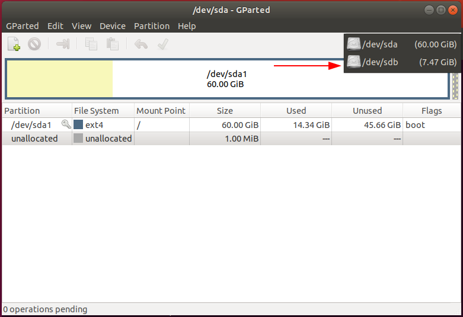
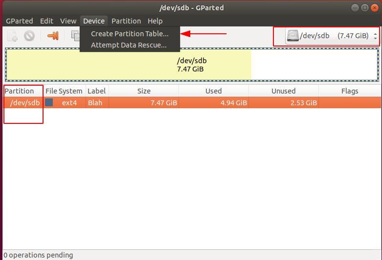
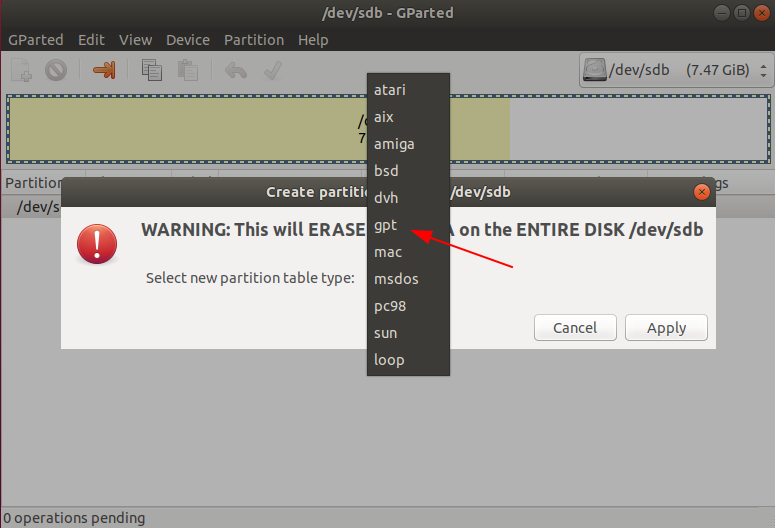
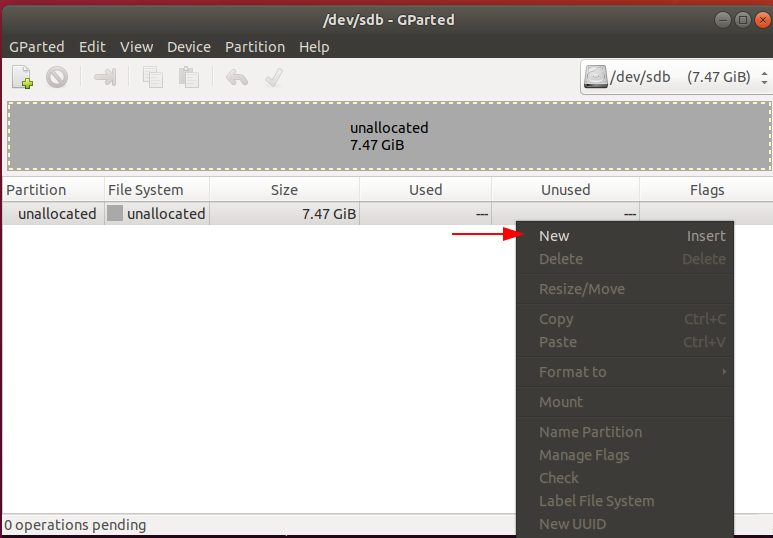
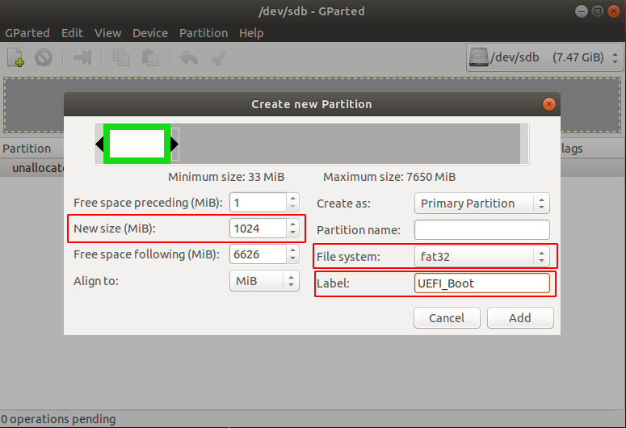
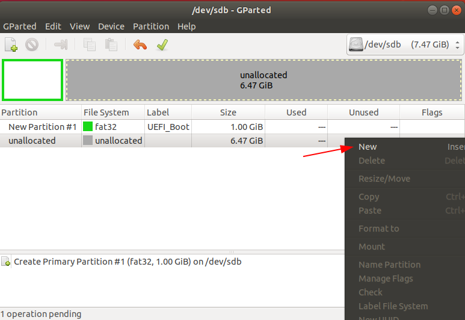
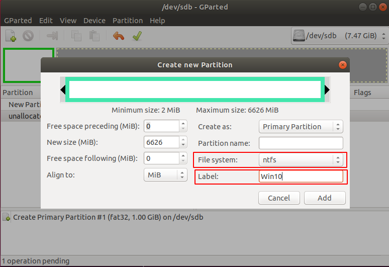
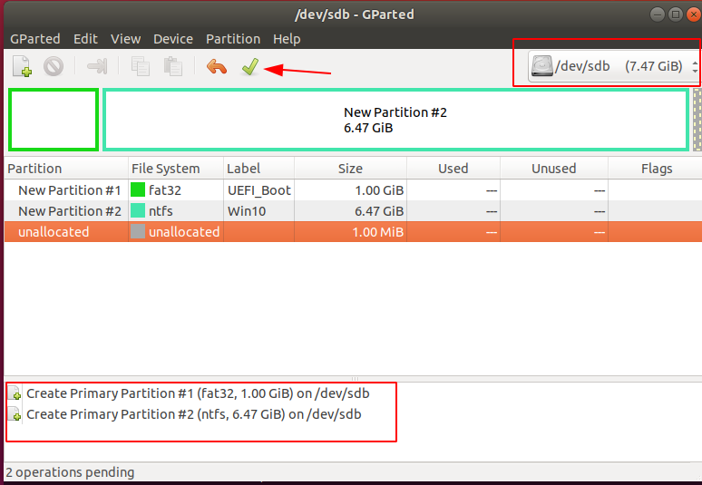
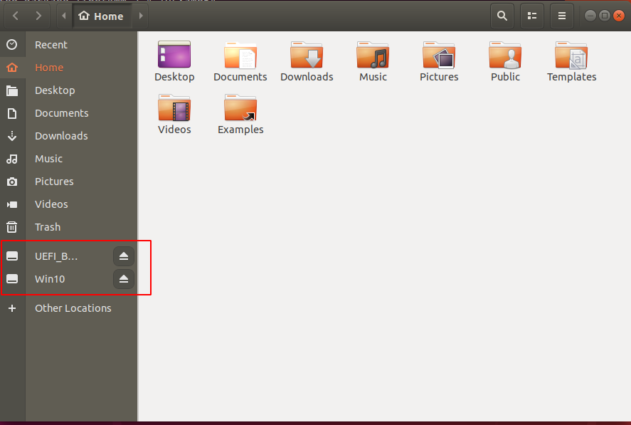

Начиная с Windows 10 1809 проявились проблемы с созданием загрузочных дисков в режиме UEFI. На некоторых (старых) машинах такие диски просто не загружаются с какой-нибудь ошибкой типа "could not open, partition unsupported".
Проблема в том, что образ Windows 10 перевалил размером за 4 ГБ и перестал помещаться в файловую систему FAT32. FAT32 является единственной универсально поддерживаемой ФС для UEFI загрузчкиков. Есть создать разделы с NTFS, то на некоторых устройствах проявится как раз такая ошибка.
Что делать? Нужно разбить флешку на два раздела: основной с FAT32 (маленьний) и дополнительный с NTFS (для больших файлов). Каким-то необъяснимым образом это работает.
Рассмотрим как это сделать на примере Ubuntu.
1. Установим gparted:
$ sudo apt install gparted
2. Запустим gparted:
$ sudo gparted
3. Выберем нужное устройство в правом верхнем углу:

4. Создадим новую таблицу разделов на выбранном устройстве:

5. Выберем gpt:

6. Создадим первый основной раздел (ФС FAT32. 1 ГБ будет достаточно):


7. Создадим еще один дополнительный раздел, на этот раз NTFS на все оставшееся пространство:


8. Убедимся, что таблица разделов выглядит правильно и применим изменения:

9. После завершения операции в проводнике можно будет увидеть два раздела:
10. Запустим терминал, перейдем в директорию с ISO-образом Windows:
$ cd ~/Downloads
$ ls
Win10_1809Oct_English_x64.iso
11. Просмотрим содержимое образа:
$ 7z l Win10_1809Oct_English_x64.iso | grep -i boot.wim
2018-10-29 20:16:30 ..... 400988824 400990208 sources/boot.wim
Вот из-за этого файла и не получается записать Windows на FAT32.
12. Создадим два файла с перечислениями файлов для разделения их по разделам:
$ echo "sources/" > exclude.txt
$ echo "sources/boot.wim" > include.txt
13. Извлечем первую партию файлов на FAT32 раздел:
# Extract the contents of the ISO file to the FAT32 partition using 7-zip,
# but exclude the "sources" file.
# Exclude using 7-zips exclude function: -x@filename.txt
$ 7z x -x@exclude.txt Win10_1809Oct_English_x64.iso -o/media/blah/UEFI_Boot/
14. Извлечем вторую партию файлов на FAT32 раздел:
# Extract only the files specified by the include file to UEFI_Boot
# Include using 7-zips include function: -i@filename.txt
$ 7z x -i@include.txt Win10_1809Oct_English_x64.iso -o/media/blah/UEFI_Boot/
15. Извлечем третью партию файлов на NTFS раздел:
# Extract the "sources" folder to the Win10 partition. Since we already
# have a file containing this information (exclude.txt), we can use
# the include function with the existing "exclude.txt" file
# Include using 7-zips include function: -i@filename.txt
$ cat exclude.txt
sources/
$ 7z x -i@exclude.txt Win10_1809Oct_English_x64.iso -o/media/blah/Win10/
16. Безопасно отмонтируем оба раздела (возможно придется подождать):

17. Флэшка готова к загрузке!